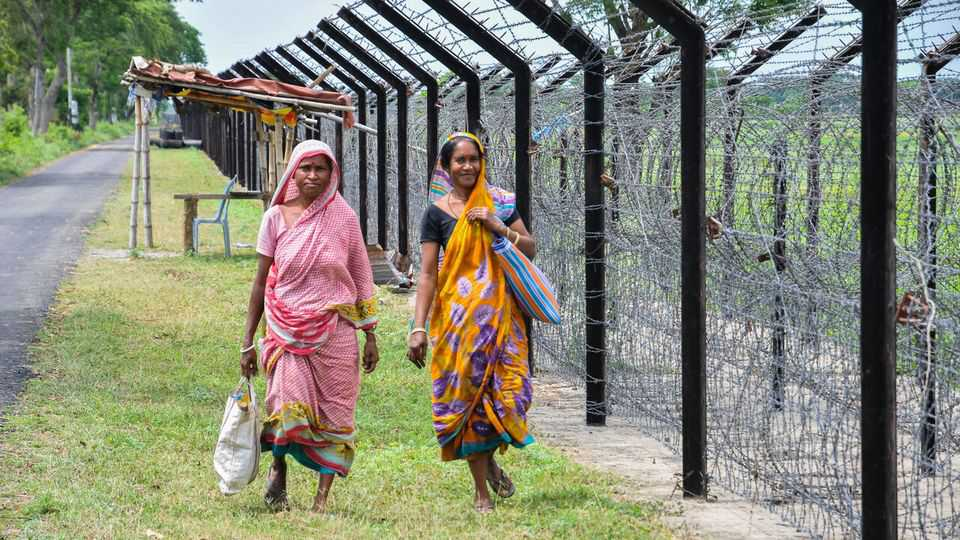
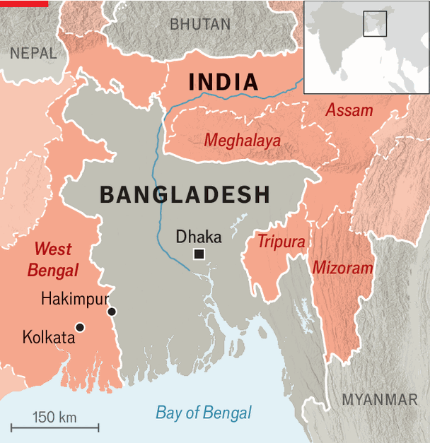

To keep out “infiltrators”, India is trapping its own citizens
A buffer zone has become a miserable limbo

Sep 17th 2026
A MAKESHIFT CHECKPOINT holds up bikes, business and lives. Along a village road in Hakimpur, in the Indian state of West Bengal, two girls in burqas wait as a border guard rummages through their rucksacks. Behind them is an uneasy kilometre-wide buffer zone—still within Indian territory but governed without its freedoms. Yet unlike many borderlands, this is not no-man’s-land; 25,000 inhabitants live in its seven villages. A crowd gathers to complain to The Economist about mounting restrictions and checks.
The buffer is against “infiltrators” from Muslim-majority Bangladesh who, according to India’s home minister, Amit Shah, threaten the country’s security, economy and demographic balance. He has promised to “hang every Bangladeshi infiltrator upside down” and likened them to termites. Undoubtedly there are many, perhaps millions, of Bangladeshis living without the right papers in India; but the government cites sensationalist estimates of up to 20m of them and swears they will all be kicked out. India is not a dharamshala (a charity guesthouse), Mr Shah recently told intelligence officers.

He is right: some of its eastern borderlands are more akin to an open-air prison. One half-baked plan would have guarded its riverine stretches with snakes and crocodiles. Last year about three dozen Bangladeshis died at the hands of Indian border guards, according to Ain o Salish Kendra, a Bangladeshi human-rights organisation. But Indians, too, are trapped by the shrill politics of the borderland.
At 4,100km, the India-Bangladesh border is one of the world’s longest, and among the most porous. Colonial history split hundreds of millions of Bengali-speakers into separate countries, but many still move back and forth across the border. Some houses have their kitchen in India and bedroom in Bangladesh. Tony Sardar, a shopkeeper, shows videos on his phone of a boat race in which Indian rowers are cheered by Bangladeshis on the other side of a river that you could easily swim across. The races stopped this spring. Border policy has hardened since 2014, when the Bharatiya Janata Party (BJP) took power nationally. But as the BJP prepared for the West Bengal state election in April, the rules and the rhetoric got cruder.
In winning the state for the first time, the BJP gained control of the largest of the five Indian states that border Bangladesh. In August, Mr Shah’s home ministry said a new batch of intelligence units would be deployed in border towns, to keep tabs on extremists and smugglers. The party has also talked up “pushbacks”, in which Bengali-speaking Muslims who are allegedly Bangladeshi, not Indian, are rounded up across India, bused to border towns and shoved into Bangladesh. This improvised method flouts due process.
Undeterred, West Bengal’s new chief minister, Suvendu Adhikari, has told police to hand detainees directly to border security guards. By late June, he was boasting of 10,000 pushbacks on his watch (observers say it is more like 5,000–7,000 since the state election). Now that Bangladesh has beefed up its own border patrols, most end up in holding centres or in the buffer zone.
Virtually all of those who are being deported are Muslims, suspected of being foreigners merely because they speak Bengali and pray towards Mecca. Some were picked up after a botched revision of voter lists marked many residents as ineligible to vote, casting doubts over their citizenship, despite the documents they can present. Meanwhile, locals describe watching paperless Hindus surrender to border guards, only to be reassured that Hindus, who face increasing attacks in Bangladesh, are welcome to stay. As of 2024, that double standard is law: non-Muslim minorities from neighbouring countries can claim asylum and get fast-tracked for citizenship.
Daily life at the border is tiresome. Locals often waste four or five hours with guards who dismantle their bikes and stick rods or fingers into lunchboxes. In the winter fog, officers aren’t always in the mood to man the checkpoint, stranding locals on either side. Rationing meant to deter smuggling gangs also deprives villagers of food, baby formula and sanitary pads. “Are we actually part of India?” demands Ekmal Gazi, a village leader in the mostly Muslim buffer zone.
India’s politics has further soured diplomatic relations, which were already extremely rocky, with its neighbour. Riaz Hamidullah, Bangladesh’s high commissioner in Delhi, says India should show some izzat (respect). But the BJP’s lexicon of “termites” and “infiltrators” appears to leave little room for that. ■
Stay on top of our India coverage by signing up to Essential India, our free weekly newsletter.